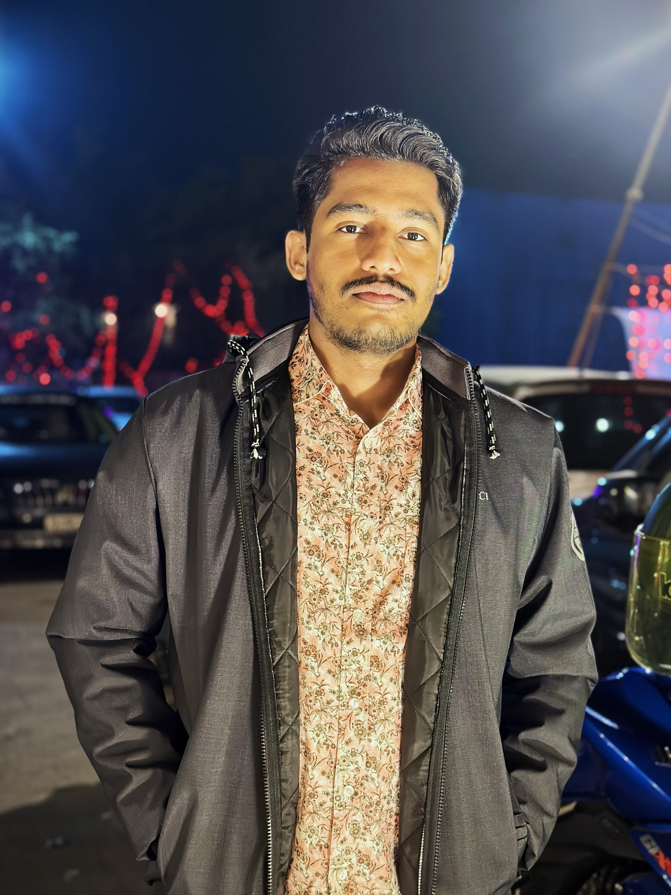

Contact: arifrahman78640@gmail.com
LinkedIn: Visit Linkedin
GitHub: Pay a visit to gitHub
|  | I am the type of person who is genuine about my ambitions and interests. autonomous, imaginative, freethinker, and have strong supervision prospects. I want to be in the lead and tend to like unblemished ideas.Aids in algorithm troubleshooting and is passionate about DevOps, web development, and AI. |
February 2023 - Present
September 2021 - October 2021
November 2022 - Present
Developed Using JAVA and Intellij IDE, Netbeans
Github Link: Click here
This was our individual 4th semester DBMS project that is done using the help sql queries by making the whole database and then fetching the data using sub queries and PL/sql method , also a ERD diagram of the whole database is also designed before implemening the whole thing
GitHub Link: Click here
but how??
To make my parents happy
Guess yourself!!